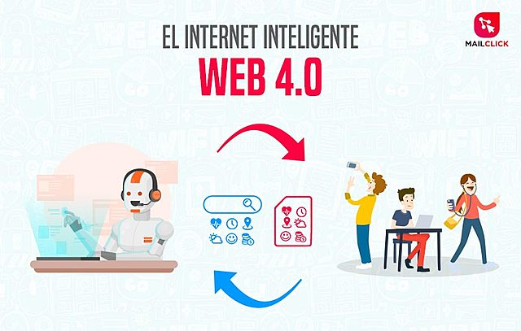

Web 1.0

" La Web 1.0 tiene sus inicios en la década de los 90's
Fue la primera generación de la web y fue concebida como una web que solo podía buscar y leer contenidos. Los usuarios no pueden agregar contenido a voluntad, ya que esta operación solo se encomienda a usuarios expertos (técnicos, informáticos o de sistema). Web 1.0 comenzó como sitios web para que las empresas difundieran información a las personas (Aghaei, 2012). Esta información se presenta a los usuarios de manera limitada a través de páginas estáticas.
Web 2.0

La Web 2.0 supone un paso adelante en la evolución de Internet
Se caracteriza por permitir que cualquier tipo de usuario pueda crear y compartir información sin requerir que tengan habilidades técnicas o sean expertos en programación o computación . Este sitio web tiene un enfoque particular en el contenido generado por el usuario, la usabilidad y la interoperabilidad para los usuarios finales. Debido a estas características, es la forma más fácil para que cualquier usuario interactúe, cree contenido y comparta contenido en la Web; no se requiere experiencia técnica o técnica.
Web 3.0

La web 3.0 es el tipo de internet más actual, cuyas características principales son la democratización y que basado en la tecnología de la web semántica.
Denominada también Web semántica, su objetivo es disminuir las tareas y decisiones de los humanos, para dejar que las máquinas proporcionen contenidos legibles en la Web. Incluye tecnologías semánticas, computación social e inteligencia artificial. Facilita la cooperación entre personas, máquinas y la organización de un gran número de comunidades y redes sociales (Aghaei, 2012).
Web 4.0
A web 4.0 es como denominamos a la internet de las máquinas que entienden a los humanos y que aprenden cuanto más se usan (machine learning).
Internet 4.0. Comenzó en 2016 y se enfoca en brindar un comportamiento más inteligente y predictivo para que podamos hacer una declaración o hacer una llamada telefónica para iniciar una secuencia de acciones para lograr lo que pedimos, queremos o decimos.